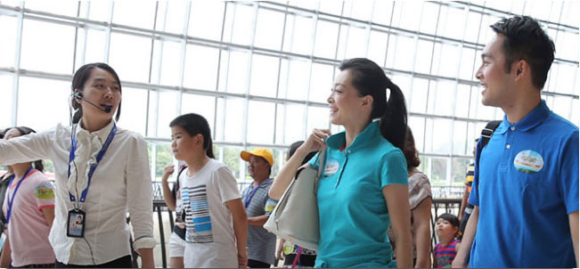
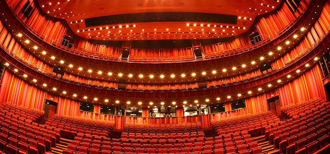
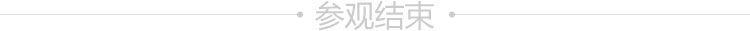

国家大剧院是国家兴建的重要文化设施，也是一处别具特色的景观胜地。作为新北京十六景之一的地标性建筑，国家大剧院造型独特的主体结构，一池清澈见底的湖水，以及外围大面积的绿地、树木和花卉，不仅极大改善了周围地区的生态环境，更体现了人与人、人与艺术、人与自然和谐共融、相得益彰的理念。
¥40
¥60
¥70
*建筑包括：歌剧院、音乐厅、戏剧场
*展览包括：艺术沙龙、东展厅、现代艺术馆、西展厅、资料中心环廊
可参观时长1-2小时
温馨提示：剧院内还有咖啡厅、西餐厅等休闲去处，欢迎光临。

为了方便您了解国家大剧院，我们为您提供中文免费 定时讲解及收费的中英文讲解服务，讲解内容包括大剧院 建筑和一个艺术展览。免费讲解服务时间：9:00-16:00。
歌剧院是国家大剧院内最宏伟的建筑，以华丽辉煌的 金色为主色调。主要上演歌剧、舞剧、芭蕾舞及大型文艺 演出。共有观众席2207个（含站席）。
音乐厅洁白肃穆，色调风格宁静、清新而高雅，以演 出大型交响乐、民族乐为主，兼顾其它形式的音乐演出。 观众席围绕在舞台四周，共有观众席1859个（含站席）。

戏剧场是国家大剧院最具民族特色的剧场，以中国红 为主色调，真丝墙面烘托出传统热烈的气氛。主要上演话 剧、歌剧、地方戏曲等演出。
在国家大剧院北水下长廊东西两侧各有一个面积达 1200平方米的展览厅。在这里，“中国京剧艺术大展”、 “古希腊戏剧展”悉数登场。
大剧院艺术馆是国家大剧院内面积最大的展馆，位于 歌剧院屋顶平台南侧。这里介绍和回顾国家大剧院经营历 程的常设展览，向您展现国家大剧院的成长印迹。

您可立即通过官网购买参观票
地铁：1号线到天安门西站，出C口直达剧院北门入口； 自驾：观众可由大剧院东北侧入口（人大会堂西路路西）或西 北侧入口（石碑胡同路东）驶入停车场。停车费6元/小时。 地址：北京市西城区西长安街2号
无障碍通道位于国家大剧院东北停车场入口处，长约40米，经通道右侧的轮椅升降机，便可从大会堂西路的室外地坪直接到达大剧院北门售票大厅。平缓的斜坡、明亮的通道灯光，均是为方便残疾人士而专门设计。 走进大剧院，细致入微的人性化设计和服务更是随时随处可见。 专门的安检通道及人工安检，减少残疾人士等待的时间；大厅及公共空间路面平坦，定期进行防滑处理；标识导引系统、触摸屏导引系统 及免费的参观折页，为观众提供清晰明了的指引服务；北水下廊道有常设的免费饮水处；分别位于橄榄厅、音乐厅、戏剧场、枣核厅的7部专为残疾人士准备的直 梯，可到达国家大剧院各个楼层；29个残疾人专用卫生间，覆盖大剧院所有区域；四大剧场内的残疾人通道和专座，让观演无距离。国家大剧院的所有服务人员， 也将随时为广大游客提供保障与服务。


{kind=link}